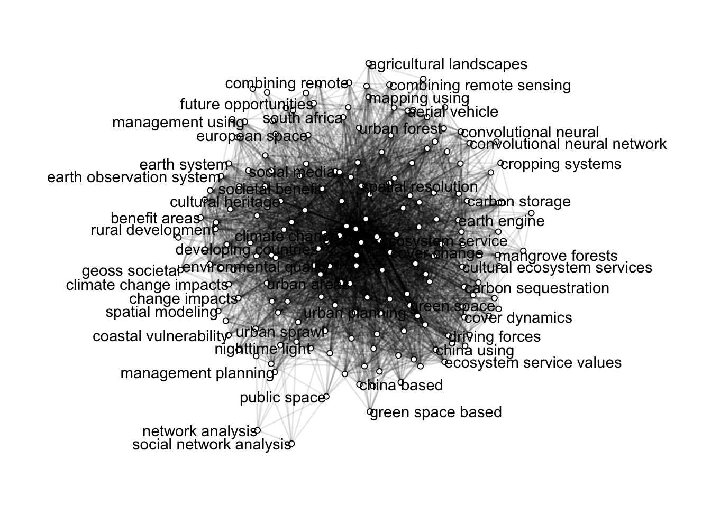
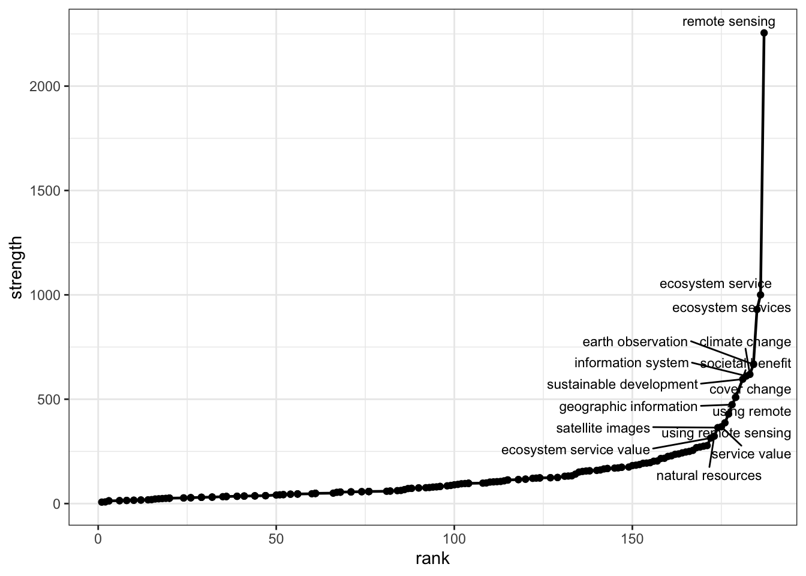
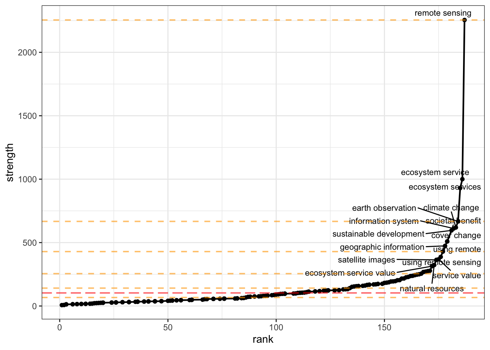

Web of Science prelim analysis
Description
This script works with several search sets to help methodically identify search strings for a more inclusive literature database search.
Web of Science
Data includes bibtex entries for the top most relevant results from a Web of Science search using the following terms within the “topic” (i.e., title, abstract, keywords, keywords-plus):
AND
(‘decision’ OR ‘optimization’ OR ‘risk analysis’ OR ‘operational context’ OR ‘management’ OR ‘policy’)
AND
(‘value*’ OR ‘valuation’ OR ‘benefit*’)
AND (for Web of Science search #2 only)
(‘social’ OR ‘societal’ OR ‘cultural’ OR ‘socioeconomic’)
A search using these terms on August 10, 2023, generated 1158 results, which were downloaded in bibtex format including the full record and all citations (for the Web of Science), must be cleaned to remove forced line breaks for the bib2df package to parse it properly.
CONVEI Zotero library
Data includes two different sets of records from the CONVEI Zotero library:
- Bibtex records for all documents in the CONVEI library
- Bibtex records for only those documents in the CONVEI benchmark collection.
These bibtex records are in better shape than those from Web of Science, but cleaning them won’t hurt.
Cleaning the bibtex
The Web of Science records contain line breaks that disrupt the ability of the bib2df package to work properly. Replace those problematic line breaks (a line break \n, followed by a three-space indentation) with a single blank space.
Now clean, read in the bibtex files and bind into a data.frame.
Check benchmarks against Web of Science search #2
Prior to improving the search terms, the percent of benchmark articles contained in the Web of Science search is 23.8%%.
Use litsearchr functionality
This section is based heavily on https://www.r-bloggers.com/2023/03/automated-systematic-literature-search-using-r-litsearchr-and-google-scholar-web-scraping/. Code is adapted for bibtex data accessed from Web of Science and the CONVEI Zotero library. Where instruction text is (more or less) verbatim from the blog post, it is indicated by block quotes.
Identify useful terms from title
Use the Rapid Automatic Keyword Extraction (RAKE) algorithm from litsearchr::extract_terms, as well as stop word elimination, to extract useful terms from titles.
Create Co-Occurrence Network
We will consider the title and abstract of each article to represent the article’s ‘content’ and we will consider a term to have appeared in the article if it appears in either the title or abstract. Based on this we will create the document-feature matrix, where the ‘documents’ are our articles (title and abstract) and the ‘features’ are the search terms. The Co-Occurrence Network is computed using this document-feature matrix.
Uses litsearchr::create_dfm() to create a document-feature matrix and litsearchr::create_network() to create the co-occurrence network.
Prune the Network based on node strength
Compute node strength
Node strength in a network is calculated by summing up the weights of all edges connected to the respective node.Thus, node strength investigates how strongly it is directly connected to other nodes in the network.

Prune based on chosen criteria
We want to keep only those nodes that have high strength, but how will we decide how many to prune out?
litsearchr::find_cutoff()provides us with two ways to decide: cumulative cutoff and change points. The cumulative cutoff method simply retains a certain proportion of the total strength. The change points method useschangepoint::cpt.mean()under the hood to calculate optimal cutoff positions where the trend in strength shows sharp changes.Again, we will use the heuristic when in doubt, pool results together, i.e. we will use the change point nearest the to the cumulative cutoff value we set.

Inspect selected terms:
aerial vehicle, benefit areas, carbon sequestration, carbon storage, change detection, climate change, cover change, cover changes, cover mapping, cultural ecosystem, cultural ecosystem services, cultural heritage, decision making, decision support, developing countries, development goals, disaster management, driving forces, earth engine, earth observation, earth observation system, earth observations, ecological environment, ecosystem health, ecosystem service, ecosystem service value, ecosystem service values, ecosystem services, ecosystem services value, environmental quality, forest cover, forest management, geographic information, geographic information systems, global earth, global earth observation, global earth observation system, google earth, google earth engine, green space, green spaces, heritage sites, hierarchy process, information system, information systems, integrated approach, land-use change, machine learning, management policies, mangrove forest, natural hazards, natural resources, neural network, observation system, observing system, protected areas, rapid urbanization, remote sensing, remote sensing images, remote sensing techniques, remotely sensed, resource management, river basin, satellite imagery, satellite images, satellite remote, satellite remote sensing, sensing images, sensing techniques, service value, service values, services value, social media, societal benefit, societal benefit areas, societal benefits, socioeconomic development, spatial analysis, spatial resolution, spatially explicit, surface temperature, surface water, sustainable development, sustainable development goals, sustainable management, united states, unmanned aerial, unmanned aerial vehicle, urban areas, urban development, urban green, urban green space, urban growth, urban planning, urban sprawl, using remote, using remote sensing, using satellite, vegetation cover, water quality, water resources, world heritage
Some expression already contain others. For example, ‘mdma-assisted psychotherapy’ is an instance of ‘-assisted psychotherapy’ which is a very important key term that defines psychotherapies that use pharmacological means or other tools to achieve it’s results. This happens for a lot of strings, and generally, we would like to keep only the shortest unique substring
In our case, ‘earth observations’ and ‘earth observation system’ are instances of ‘earth observation’… similar for ‘ecosystem service[s| value]’…
We will also manually do two other changes: (1) we are not interested in ‘systematic reviews’ so we will remove it; (2) we will add the terms ‘psychotherapy’ and ‘ptsd’ as they are not already present in their simplest form.
For our purposes, let’s focus on the things not already in our preliminary search terms. Pull those out, then inspect what’s left for relevant terms to include.
[1] "aerial vehicle" "carbon sequestration"
[3] "carbon storage" "change detection"
[5] "climate change" "cover change"
[7] "cover mapping" "developing countries"
[9] "development goals" "driving forces"
[11] "earth engine" "ecological environment"
[13] "ecosystem health" "ecosystem service"
[15] "environmental quality" "forest cover"
[17] "geographic information" "global earth"
[19] "google earth" "green space"
[21] "heritage sites" "hierarchy process"
[23] "information system" "integrated approach"
[25] "land-use change" "machine learning"
[27] "mangrove forest" "natural hazards"
[29] "natural resources" "neural network"
[31] "observation system" "observing system"
[33] "protected areas" "rapid urbanization"
[35] "remotely sensed" "river basin"
[37] "sensing images" "sensing techniques"
[39] "spatial analysis" "spatial resolution"
[41] "spatially explicit" "surface temperature"
[43] "surface water" "sustainable development"
[45] "united states" "unmanned aerial"
[47] "urban areas" "urban development"
[49] "urban green" "urban growth"
[51] "urban planning" "urban sprawl"
[53] "using remote" "vegetation cover"
[55] "water quality" "water resources"
[57] "world heritage" Looking for new key terms in the three Venn diagram areas of: “value”, “decision”, and “earth science information”.
- ESI: Many terms such as “machine learning,” “information system,” “spatial resolution” may fit here but are too generic to apply specifically to satellite or remote sensing. Some possibilities to include:
- aerial vehicle (and/or unmanned aerial) (+63 hits)
- remotely sensed (+35 hits)
- Decision support: no terms here seem to fall into this category; we have excluded our preliminary search terms, which implies that no additional terms relevant to this domain showed up as important in the co-occurrence network.
- Value/benefit: Many of the terms here seem to refer to some state of the world, e.g., “vegetation cover,” “river basin,” “mangrove forest,” “urban areas,” but without specifically noting a value or benefit related to these. A few possiblilites appear, however:
- terms relating to quality, service, or health (value, benefit)
- ecosytem service (+1684 hits)
- ecosystem health (+166 hits)
- environmental quality (+216 hits)
- water quality (+1588 hits)
- terms relating to goals or implied importance (value)
- development goals (+347 hits) (and/or sustainable development +317 hits)
- protected areas (+1141 hits)
- heritage sites (+132 hits) (and/or world heritage +63 hits)
- terms relating to quality, service, or health (value, benefit)
All told, these added criteria expand the search results from 1163 to 6419 (on Aug 14 2023).
Compare new set against benchmark articles
| author | title | journal | year | doi |
|---|---|---|---|---|
| angelstam per | assessing village authenticity with sate | ambio: a journal of the human environment | 2003 | 10.1579/0044-7447-32.8.594 |
| charreire h | using remote sensing to define environme | health & place | 2014 | 10.1016/j.healthplace.2013.09.017 |
| cooke roger | value of information for climate observi | environment systems and decisions | 2014 | 10.1007/s10669-013-9451-8 |
| druckenmiller hannah | opportunities for increasing the impact | NA | 2023 | NA |
| eom young sook | measuring the economic benefits of an en | space policy | 2013 | 10.1016/j.spacepol.2013.06.003 |
| florio massimo | earth observation and economic studies a | space policy | 2021 | 10.1016/j.spacepol.2021.101429 |
| haas jan | mapping and monitoring urban ecosystem s | ieee journal of selected topics in applied earth observations and remote sensing | 2017 | 10.1109/jstars.2016.2586582 |
| kalluri s | the potential of remote sensing data for | environmental science & policy | 2003 | 10.1016/j.envsci.2003.08.002 |
| lombardo seamus | utilizing satellite earth observation an | NA | 2022 | NA |
| macauley molly k | the value of information measuring the c | space policy | 2006 | 10.1016/j.spacepol.2006.08.003 |
| morretta valentina | the socioeconomic value of scientific pu | technological forecasting and social change | 2022 | 10.1016/j.techfore.2022.121730 |
Match now improves from 5 of 21 benchmarks to 10 of 21 benchmarks… hmm… still not great!